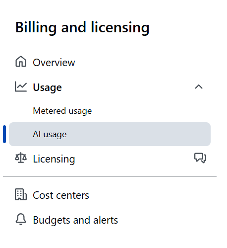
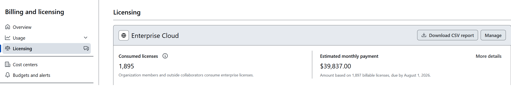
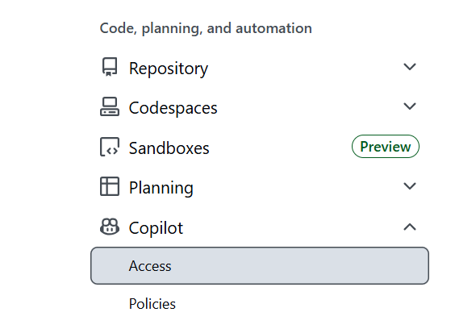

Understand the model · size your budgets · respond to incidents. Built for FinOps & license admins.
Leadership view: what is predictable, what can change, and how to stay in control.
Copilot usage-based billing combines fixed monthly seat fees with shared AI credit pools.
| Concept | Definition & Impact |
|---|---|
| Seat / License | Fixed monthly cost ($19 Business / $39 Enterprise). Required for access. |
| Included Credits | Monthly AI credit allowance granted by each active seat. |
| The Shared Pool | Aggregation of all seat credits into a single pot for the entire enterprise or organization. |
| Metered Usage | Overage charges at $0.01 / AI credit once the shared pool is exhausted. |
| Base Features | Code completions + next-edit suggestions are included in seat fees and do not consume AI credits. |
| Governing Budgets | Spending caps at user, cost center, organization, or enterprise level to control metered risk. |
| Billing Cycle | Pool resets 00:00 UTC, 1st of the month (credits do not roll over). |
| Feature | Consumes AI credits? |
|---|---|
| Code completions (ghost text) | No |
| Next edit suggestions | No |
| Copilot Chat | Yes |
| Copilot CLI | Yes |
| Coding / cloud agent | Yes |
| Spaces, Spark, 3rd-party agents | Yes |
Memory aid: “Typing help uses no AI credits; thinking/agent work is metered.”
Copilot cost changes based on how much work the AI has to do.
| What changes cost? | Plain-English meaning |
|---|---|
| Model selected | More powerful models cost more. Use them for harder work, not every task. |
| Amount of context | Asking Copilot to read more files, history, or pasted text uses more credits. |
| Size of the answer | Longer generated answers cost more than short answers. |
Two families. Learn the split and the rest follows.
| Budget | Caps what | Active when | Hard stop? |
|---|---|---|---|
| Universal user-level | Each user's total credit use | Always (pool + metered) | Always |
| Cost-center user-level | Each member's total use (per cost center) | Always | Always |
| Individual user-level | One specific user's total use | Always | Always |
| Cost center budget | A team's metered charges | Metered phase only | Only if "Stop usage" is enabled |
| Organization budget | An organization's metered charges | Metered phase only | Only if "Stop usage" is enabled |
| Enterprise budget | All metered charges (failsafe) | Metered phase only | Only if "Stop usage" is enabled |
Controls how much each person can use in total.
Applies from the first credit used, whether credits come from the included pool or paid overage. When the person reaches the limit, usage stops.
Controls how much paid overage a team, organization, or enterprise can spend.
Only matters after included credits are used up. It blocks usage only when “Stop usage” is enabled.
Goal: restore critical developer work without opening unlimited spend.
Find out what actually stopped usage.
Reduce panic while the fix is being prepared.
Identify whether this is normal demand or a spike.
Start in GitHub billing and licensing views. Use AI usage for usage patterns, then check licensing and organization access for seat context.



Restore access without creating a blank check.
Real savings come from behavior + model choice, not just caps.
| Lever | Why it works |
|---|---|
| Ask engineering to use lighter models for routine work | Lightweight models cost a fraction of frontier per token |
| Keep context small | Fewer input tokens; avoids the long-context price tier |
| Don't dump whole repos / history into agents | Big context + big output = the most expensive pattern |
| Reserve frontier models for genuinely hard tasks | Output tokens dominate cost; use power where it pays off |
| Use included coding suggestions first | Inline completions and next-edit suggestions are included in the license fee and do not consume AI credits |
| Keep developer tools current | Updated IDEs and Copilot extensions show usage more accurately and reduce billing confusion |
1 AI credit | = $0.01 USD |
$10 budget | = 1,000 AI credits |
| Included AI credits (Business) | = seats × 1,900 credits |
| Included AI credits (Enterprise) | = seats × 3,900 credits |
| When overage can happen | When approved user limits are higher than the included credits available. |
| Extra budget to plan | Set an overage budget for usage that goes beyond the included credits. |
| Highest planned monthly bill | = license fees + approved overage cap |
Complete these controls to reduce future incidents.
| Owner | Action |
|---|
Scale up: cost centers with users assigned directly for predictable, per-team accountability; cost-center user-level budgets to give departments different per-user caps; cost-center exclusion for teams that need independent spend.